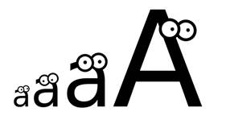

Prev - #33 Comma-Formatted Numbers | Table of Contents | Next - #35 Title Case
getUppercase('Hello') → 'HELLO'

Python is known as a “batteries included” language because its
standard library comes with many useful functions and modules. One of these is
the upper() string method, which returns an
uppercase version of the string: 'Hello'.upper()
evaluates to 'HELLO'. However, in this exercise,
you’ll create your own implementation of this method.
Exercise Description
Write a getUppercase() function with a
text string parameter. The function returns a string
with all lowercase letters in text converted to
uppercase. Any non-letter characters in text remain
as they are. For example, 'Hello' causes getUppercase() to return 'HELLO'
but 'goodbye 123!' returns 'GOODBYE
123!'.
These Python assert statements stop
the program if their condition is False. Copy them
to the bottom of your solution program. Your solution is correct if the following
assert statements’ conditions are all True:
assert getUppercase('Hello') == 'HELLO'
assert getUppercase('hello') == 'HELLO'
assert getUppercase('HELLO') == 'HELLO'
assert getUppercase('Hello, world!') == 'HELLO, WORLD!'
assert getUppercase('goodbye 123!') == 'GOODBYE 123!'
assert getUppercase('12345') == '12345'
assert getUppercase('') == ''
Try to write a solution based on the information in this description. If you still have trouble solving this exercise, read the Solution Design and Special Cases and Gotchas sections for additional hints.
Prerequisite concepts: for loops, in operator, string concatenation, indexes
Solution Design
The getUppercase() function should
start with a new, empty string that will only contain non-lowercase characters.
Then, we can use a loop to go over each character in the text
parameter, copying characters to this new string. If the character is a
lowercase letter, we can copy the uppercase version of that letter. Otherwise,
a non-lowercase letter character can be copied to the new string as-is. After
the loop finishes, getUppercase() returns the
newly-built uppercase string.
Getting the uppercase version of a letter will involve a dictionary
that maps lowercase letters to uppercase letters. If a character from the text parameter exists as a key in the dictionary, we know
it is a letter and the dictionary contains its corresponding uppercase version.
This uppercase letter is concatenated to the end of the returned string. Otherwise,
the original character from text is concatenated to
the returned string.
Special Cases and Gotchas
The getUppercase() function should
work equally well whether the text parameter is in
lowercase or already in uppercase. Also, any non-letter characters aren't
affected by the getUppercase() function.
Note that using the dictionary that maps lowercase letters to
uppercase letters means our program only works for the basic 26 letters of the
English alphabet. Therefore, it can’t convert letters with accent marks to
uppercase, such as 'ñ' to 'Ñ',
the way Python’s upper() string method can. You
would have to add every accented letter to the dictionary if you want it to be
converted to uppercase.
Now try to write a solution based on the information in the previous sections. If you still have trouble solving this exercise, read the Solution Template section for additional hints.
Solution Template
Try to first write a solution from scratch. But if you have difficulty, you can use the following partial program as a starting place. Copy the following code from https://invpy.com/uppercase-template.py and paste it into your code editor. Replace the underscores with code to make a working program:
# Map the lowercase letters to uppercase letters.
LOWER_TO_UPPER = {'a': 'A', 'b': 'B', 'c': 'C', 'd': 'D', 'e': 'E', 'f': 'F', 'g': 'G', 'h': 'H', 'i': 'I', 'j': 'J', 'k': 'K', 'l': 'L', 'm': 'M', 'n': 'N', 'o': 'O', 'p': 'P', 'q': 'Q', 'r': 'R', 's': 'S', 't': 'T', 'u': 'U', 'v': 'V', 'w': 'W', 'x': 'X', 'y': 'Y', 'z': 'Z'}
def getUppercase(text):
# Create a new variable that starts as a blank string and will
# hold the uppercase form of text:
uppercaseText = ''
# Loop over all the characters in text, adding non-lowercase
# characters to our new string:
for character in ____:
if character in ____:
# Append the uppercase form to the new string:
uppercaseText += ____[____]
else:
uppercaseText += ____
# Return the uppercase string:
return ____
The complete solution for this exercise is given in Appendix A and https://invpy.com/uppercase.py. You can view each step of this program as it runs under a debugger at https://invpy.com/uppercase-debug/.
Prev - #33 Comma-Formatted Numbers | Table of Contents | Next - #35 Title Case